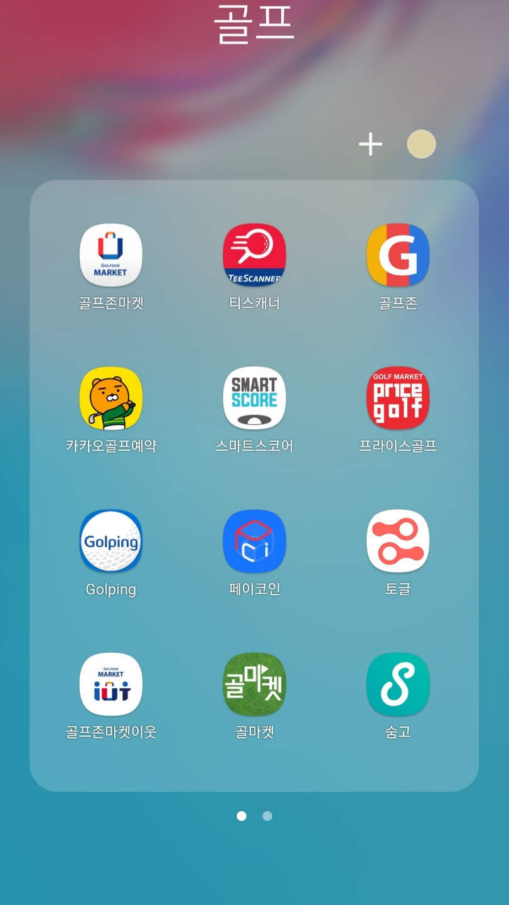
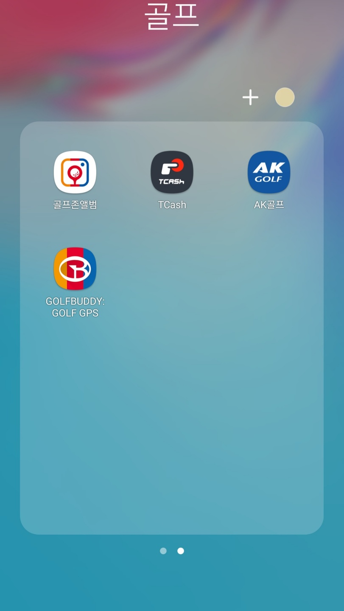

Introduce
안녕하세요! 제 이름은 이찬형이고, 현재 웹/앱 개발자를 꿈꾸고 있는 학생입니다.
학교에서 저의 본전공은 바이오시스템공학과입니다. 제가 다니고 있는 학과는 주로 농기계를 설계하는 학과입니다.
학교에서 수업을 들으면서
- matlab을 사용해 수식으로 부터 그래프를 만들고
- CAD실습을 통해 100개가 넘는 각각의 부품을 설계해보고
- 동기들과 아두이노 스마트홈 IoT를 설계하면서
코딩에 대해 많이 접하게 되어 관심이 생기게 되었습니다.
Trigger for web/app developer
본전공과 융합해서 자율주행 관련해서 배우는 스마트자동차공학과를 복수전공 신청했습니다. 농기계 분야도 고령화로 인해 자율주행 기술이 필요하다는 것 때문이었습니다.
이 학과에서 처음 배운 과목이 MFC 프로그래밍이었습니다. 아래 있는 사진처럼 윈도우 창을 설계하는 프로젝트를 주로 했습니다. - 버튼의 체크 상태를 확인하는 프로그램입니다.

여기서 윈도우 창을 설계하다보니 화면 설계에 대해 관심을 갖게 되어, 웹/앱 개발자로 분야를 변경하였습니다.
Start Golf
MFC를 시작할 때 쯤, 취미로 골프도 함께 시작을 했습니다.
골프를 시작하면서 골프 용품을 사고, 스크린 골프장과 골프장을 예약하면서 많은 어플을 깔고, 웹 사이트도 많이 방문했습니다.
 2030세대도 골프를 시작하고 앞으로 골프 산업이 커지면서 골프 어플 시장도 함께 커지고, 취미와 연결시켜 개발을 하면 사용자 입장의 앱 개발이 가능할 것 같아
앱 개발 최종 목표는 사용자가 편리한 골프 어플을 만드는게 목표입니다.